space
DESIGN - REASON
Whilst reading the project description on Canvas, my subconsciousness was leaning towards designing an object related to warfare and violence. The practicality of designing and printing a handgun is, in my opinion, to a great extent. The design process would be more interesting and I could potentially use my creation as protection for myself and my family, gimmicking a real gun if I would somehow encounter a burglar or a drug addict threatening me, consequently scaring him away. My experience with Fusion 360 enabled me to just launch the software and begin sketching.
MODELLING
I began drawing a couple of lines on the XY plane, roughly estimating the dimensions for the front sight, slide and the barrell itself.
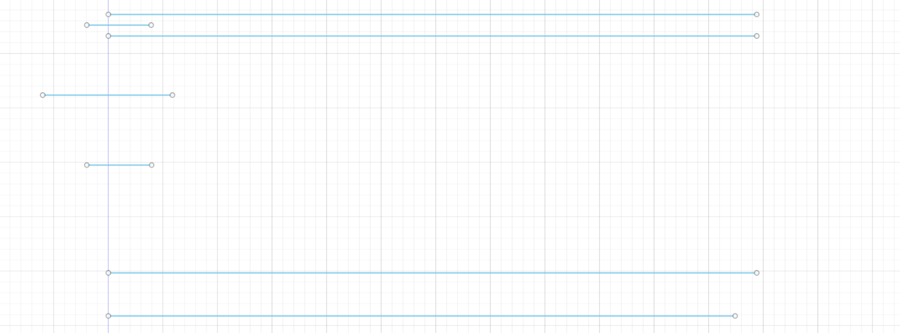I then created another sketch on the XZ-plane, using the first sketch as reference, enabling me to decide the appropriate diameter for the muzzle as well as the barrell, the width of it and height. With a little bit of trimming, filleting and mirroring the sketches looked like this.
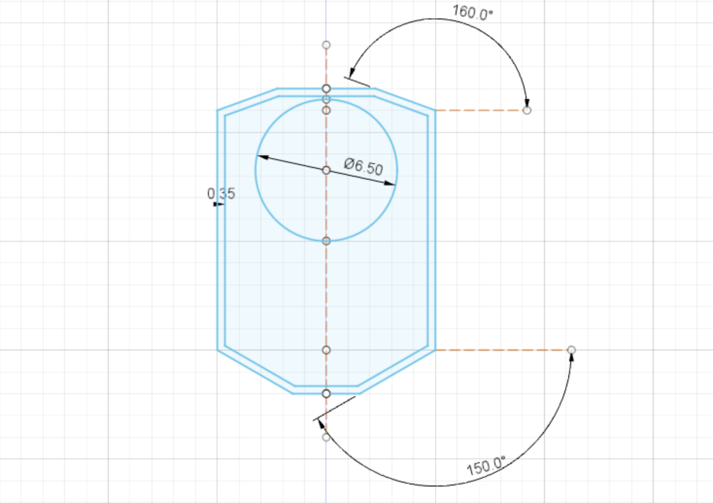 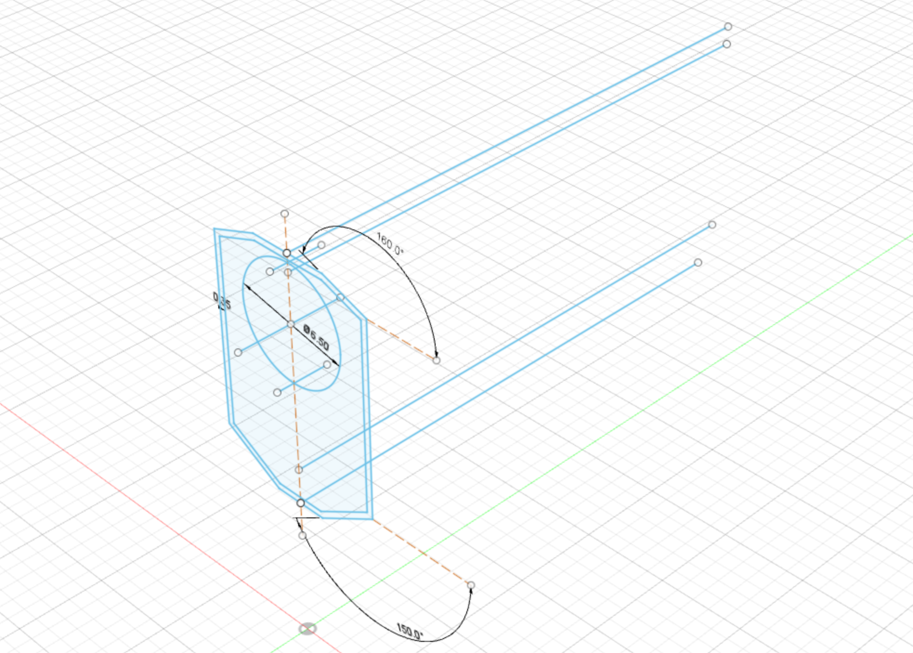I selected the appropriate profiles and extruded them in two directions. I decided to give the gun a little makeover regarding detail and sketched on the XY-face of the body and also extruded it, symmetrically. I used my second sketch and extruded it throughout the whole front part of the body, cutting out the majority of it. I created a cylinder, just short of the original diameter of the barrell and used the second sketch again extrusion and created a new body, the muzzle itself. The fruits of my labour can be seen on the images below.
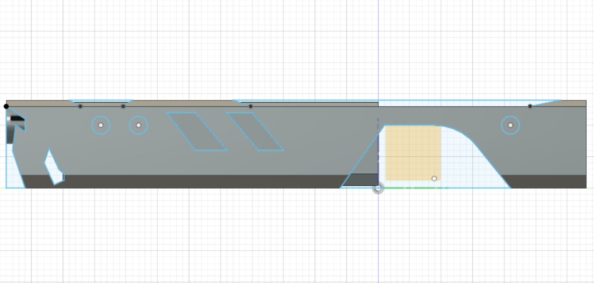 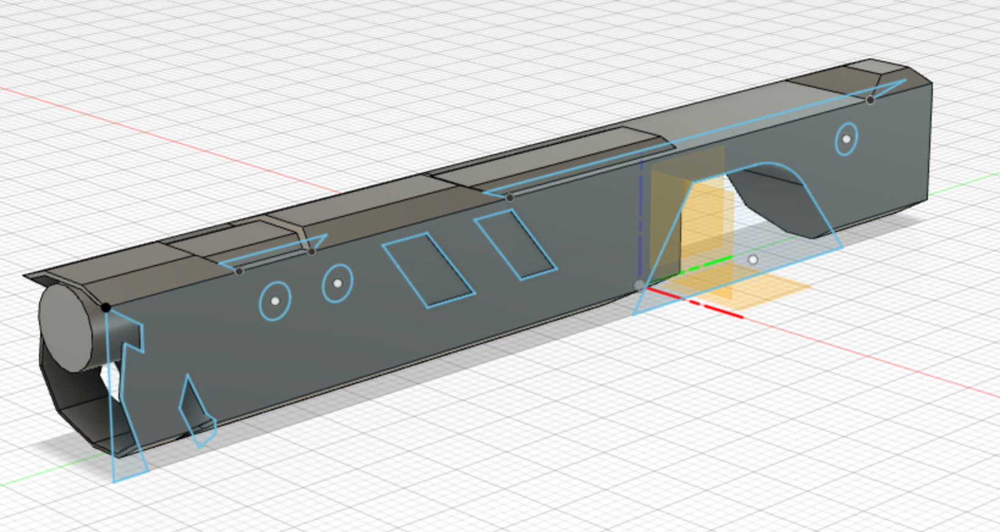I do admit, I modelled the rest of the gun in quite a hurry. I started off by creating an offset plane from a bottom face of the gun body, brought it down to a desirable height for the handle, created a sketch on that blane, extruded it through the gun body itself, rotated it and did some tweaks to create somewhat of a „grip“ and front strap. I then joined the two bodies. I created another sketch on the XZ plane, extruded it throught the upper-end part of the newly joint body, cutting out a cylinder space for the upcoming cross-sight scope. Lastly, I cut out a part of the handle, making room for the squeezing of the trigger. Images below.
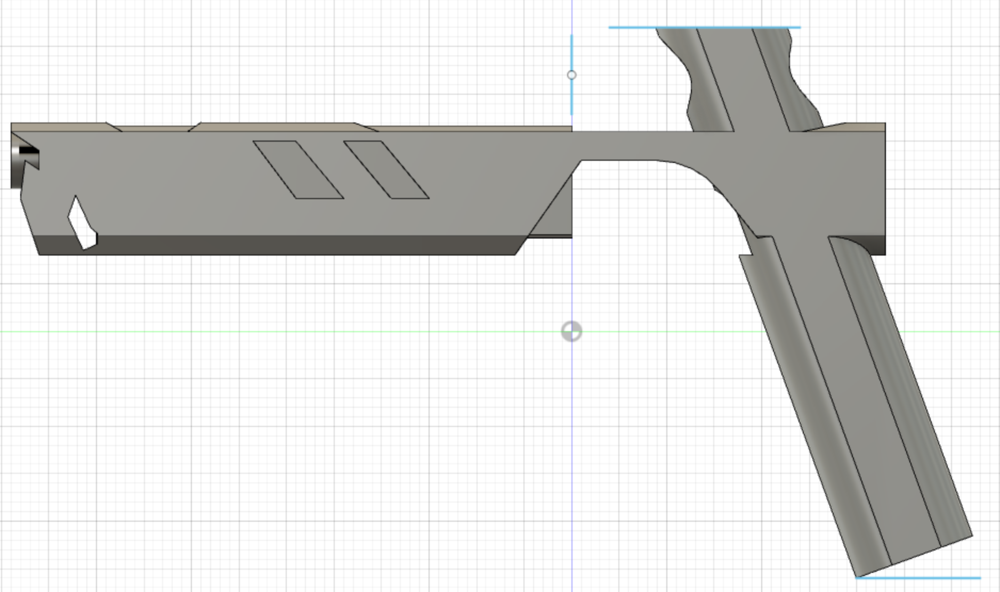 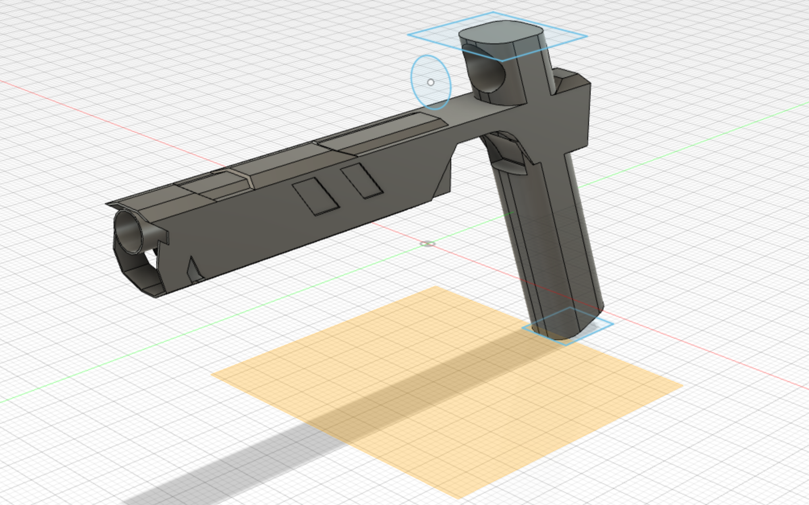The final thing to complete was the scope as well as the trigger. I created two more sketches, same old. Extruded -> tweaked -> Combined. Now I had completed my model.
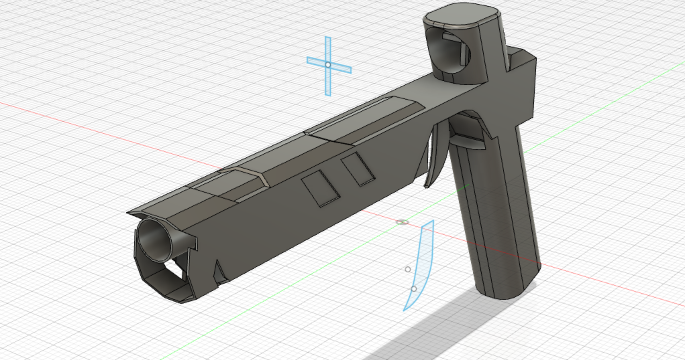I decided, once again, to enter the animation workspace. Animation and image below.
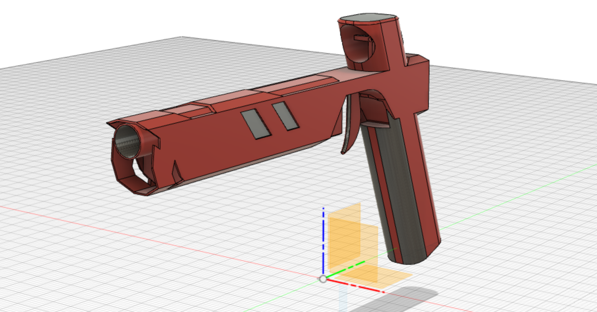THE PRINTING PROCESS
Before printing could be started, paramaters had to be determined on detail, as well as the maximum overhand for the printer to be used. Further information on what my group did can be found here. I exported the model as a .stl file for the Cura slicing software.
The filament used for printing can be seen on the image below.
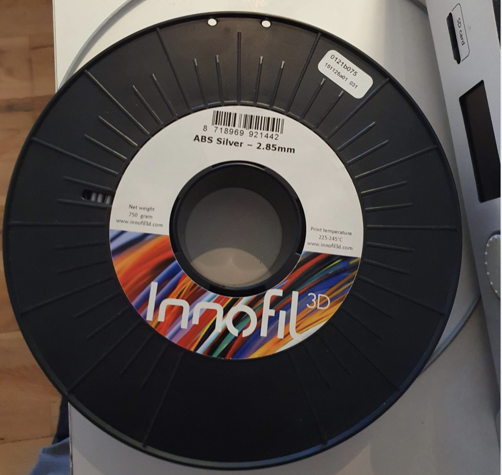The printer used can be seen on the images below.
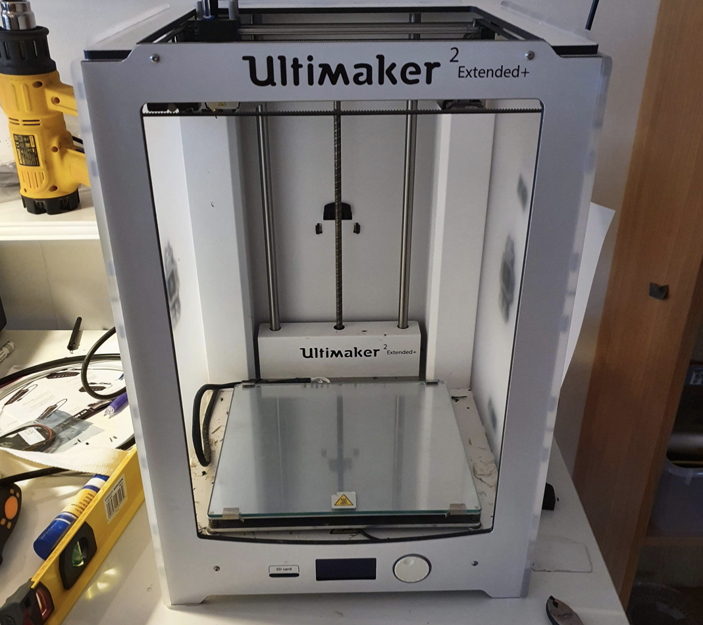 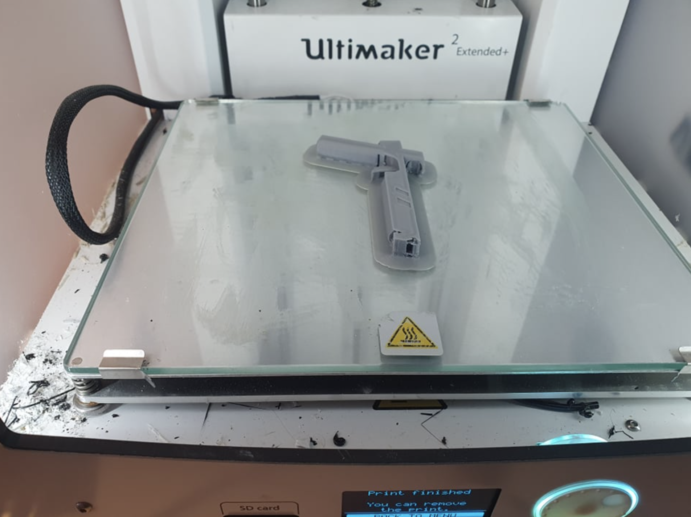The completed model can be seen on the image below. I won´t be getting robbed anytime soon.
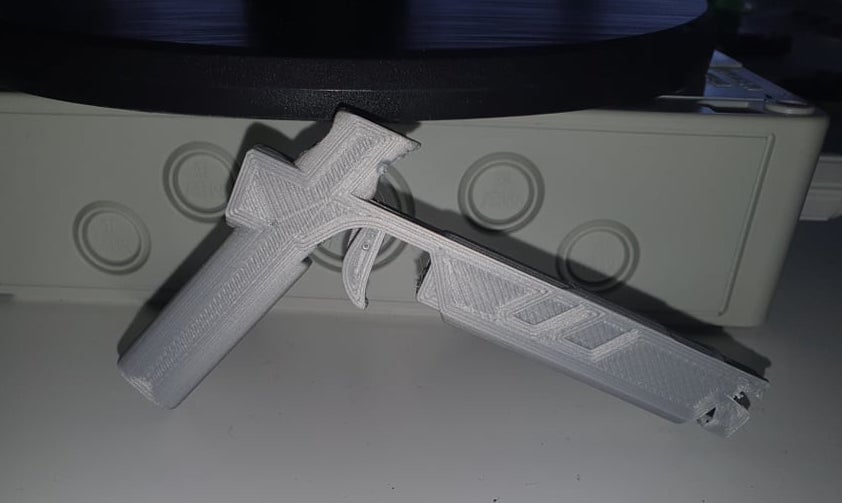3D-SCANNING
Since lava began erupting on Friday, March 19, in the Geldingadalur region of Iceland's Reykjanes Peninsula, possibly marking the beginning of a new period of heightened volcanic activity in the area, I found it fitting to 3D-scan the Víking brugghús produced "Eldgos Flamingo Vodka & Pink Grapefruit". I started off by downloading the software Qlone onto my iPhone. When you've downloaded the app, you then visit their website and download the image displayed below. This is the mat you place your object on before scanning.
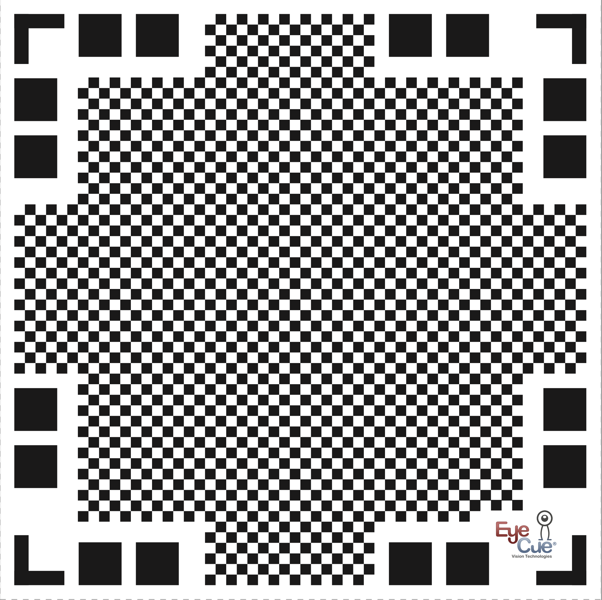The beverage had been completely finished and squashed, fortunately.
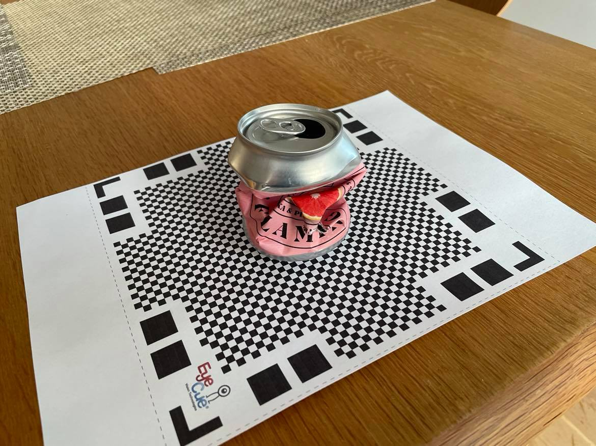The final outcome is displayed here below.